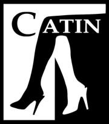

La CATIN

Description du club
Vous ne connaissez pas la CATIN ? C'est la Compagnie des Arts Théâ traux INsaïens, club de théâ tre de l'INSA. Si tu es un(e) grand(e) comédien(ne) ou simplement curieux(se), si tu aimes te déguiser ou jouer un rôle, c'est le club idéal pour décompresser dans la joie et la bonne humeur ! Les séances de répétition, (et oui il en faut) se font tous les lundis soirs de 20h à 23h en amphi Fourier toujours dans une ambiance de folie !
Le club propose ensuite trois spectacles au public Insaïen, un spectacle de sketchs délirants, le fameux Tapin de Noël les soirs du 5 au 7 décembre et deux pièces de théâ tre, l'une en mars et l'autre en avril pour prolonger le plaisir. Donc, même si vous n'êtes pas intéressés par la comédie vous pourrez au moins vous divertir et oublier vos soucis en venant voir nos représentations.